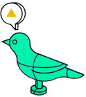

A certain enchanted forest is inhabited by talking birds.
Combinatory Forests are inhabited by talking birds, which speak words represented here by shapes, or groups of shapes delimited by parentheses. Avian dialog demonstrates that even without anything as crude as digits and operators, arithmetic and computation can emerge. To find examples of combinatory logic used in practice, see rewriting programming.
A talking bird, given some words, yields a combination of those words, we always listen to the left-most bird first.
T▲ (◆ ● ) •◆ ● ▲ C(WK)x(yz)

▲ The Bekimet Forest
Within the Bekimet forest, we find the B, KI, M, and T birds. Each bird listens to a phrase, and answers with another. The first bird that we observe is the Mockingbird, which repeats the first word.
M▲ •▲ ▲ W(WK)x
The second bird that we observe is the Kite, which discards the first word.
KI▲ ◆ •◆ K(WK)xy
The third bird that we observe is the Thrush, which swaps the first and second words, notice how parenthesized words count as a single word.
T(▲ ▲ )◆ •◆ (▲ ▲ )C(WK)(xx)y
We can't quite make out the fourth bird, but we observe that it is the Bluebird, which is also found in the next forest, so let's continue.
| Mockingbird | x x y z | Duplicates the first word |
|---|---|---|
| Kite | y z | Discards the first word |
| Thrush | y x z | Swaps the first and second words |
◆ The Becekew Forest
Within the Becekew forest, we find the B, C, K, and W birds. The first bird that we observe is the Warbler, which repeats the second word. This bird's song is similar to the Mockingbird, which repeats the first word.
W▲ ◆ •▲ ◆ ◆ Wxy
The second bird that we hear is the Kestrel, which discards the second word. This bird's song is similar to the Kite, which discards the first word. Here is the Kestrel, followed by the Warbler, notice how we always listen to birds in a sequence from the left-most bird first.
KW▲ ◆ ● • W◆ ● •◆ ● ● KWxyz
The third bird that we hear is the Cardinal, which swaps the second and third words. This bird's song is similar to the Thrush, which swaps the first and second words. Here is the Cardinal, followed by the Kestrel, notice how the effect of these two birds could be done by the Kite.
CK▲ ◆ ● • K◆ ▲ ● •◆ ● CKxyz
The elusive Bluebird takes three words, and parenthesizes the third word into the second word. It is used to "chain" words together, for example, something like "B (increment) (double) number", becomes "(increment (double number))".
B▲ (◆ ◆ )(● ● ) •▲ (◆ ◆ (● ● ))Bx(yy)(zz)
| Warbler | x y y z | Duplicates the second word |
|---|---|---|
| Kestrel | x z | Discards the second word |
| Cardinal | x z y | Swaps the second and third words |
| Bluebird | x (y z) | Composition of x to y to z |
● The Sekei Forest
Within the Sekei forest, we find the S, K, and I birds. The simplest of these birds, appears to have no intelligence at all, and so it is called the Idiot bird since its response to hearing any word, is that same word.
I(▲ ◆ ) • (▲ ◆ )(WK)(xy)
The Kestrel is also found in this forest, but we're already familiar with this one. Let's take a moment to see how words can be grouped by parentheses and transformed as if they were a single word. For instance, the Kestrel discards the second group of parenthesized words.
K▲ (◆ ◆ )(● ● ) •▲ (● ● )Kx(yy)(zz)
The Starling applies the first and second words to the last, then applies the first result to the second result.
S▲ ◆ ● •▲ (● )(◆ (● ))B(B(BW)C)(BB)xyz
| Idiot | x | x | Returns its word |
|---|---|---|---|
| Starling | x y z | x z (y z) | Returns x(z) applied to y(z). |
Conversion
Although these birds have been investigated somewhat over the past eighty years, they have for the most part been viewed as rather obscure and irrelevant creatures. It is a challenge to find any way to translate their behavior into something suitable for human perception.
| Bekimet-Becekew | Becekew-Sekei | Sekei-Becekew | |||
|---|---|---|---|---|---|
| KI | K(WK) | B | S(KS)K | S | B(B(BW)C)(B B) |
| M | W(WK) | C | S(S(K(S(KS)K))S)(KK) | K | K |
| T | C(WK) | K | K | I | WK |
| W | SS(SK) | ||||
And for that I turned to programs, and began to study just what programs in the wild might do.~

The Ornithomicon is the infamous grimoire of Avian Arithmetic.
Before progressing deeper into the enchanted forests, you should be familiar with the 9 birds of the Bekimet, Becekew and Sekei forests.
Avian Truths & Lies
The Kestrel takes two words and discards the second word. In other words, it always keeps the first one, this is the word for True:
K▲ ◆ •▲ Kxy
The Kite takes two words and discards the first word. In other words, it never keeps the first one, this is the word for False:
KI▲ ◆ •◆ KIxy
The Cardinal swaps the second and third words, it can turn a lie into a truth, and a truth into a lie, this is the word for Not:
C(KI)▲ ◆ •▲ C(KI)(K)(KI)xy
The Mockingbird takes 2 words that can be either True or False, and says True if at least one of them is True, this is the word for Or:
M(KI)(K)▲ ◆ •▲ W(WK)(KI)(K)xy
Two Starlings and a Kestrel can work together to say True, when both words are True, this is the word for And:
SSK(KI)(K)▲ ◆ •◆ SSK(KI)(K)xy
Since the word for True keeps the first of 2 words, and False selects the second, we need a way to pass the second and third words to the first one. The Idiotbird is the equivalent to IfThenElse:
I(KI)▲ ◆ •◆ I(KI)xy
Avian Numerals
Avian numerals are somewhat odd, the value of a number is equal to how many times a word applies itself on another. Considering that numbers are times a word is applied onto another, applying "2 sqr" to a number "3" would give "sqr (sqr 3)", or 81.
| 0 | KIfx | x | 4 | SB(SB(WB))fx | f(f(f(fx))) |
|---|---|---|---|---|---|
| 1 | Ifx | fx | 5 | SB(SB(SB(WB)))fx | f(f(f(f(fx)))) |
| 2 | WBfx | f(fx) | 6 | SB(SB(SB(SB(WB))))fx | f(f(f(f(f(fx))))) |
| 3 | SB(WB)fx | f(f(fx)) | 7 | SB(SB(SB(SB(SB(WB)))))fx | f(f(f(f(f(f(fx)))))) |
It looks like a Starling and Bluebird always give us the succeeding number, since "SB2" is 3 and "SB3" is 4.
SB5 •6 SB(SB(SB(SB(WB))))fx
Among its many talents, the Bluebird can also Multiply numbers, as "2(3f)" is the same as "6f", thus, "B(2)(3)" is the same as "6".
B2 3 •6 B(2)(3)fx
Our old friend the Thrush is capable of calculating the Power of two numbers. The following example is essentially applying the word three (which itself applies a word 3 times) four times.
T3 4 •81 C(WK)(3)(4)fx
As we travel deeper into the forest, we encounter the Nightingale, which applies a word to the result of the second and the fourth, and to the result of the third and the fourth:
N■ ▲ ◆ ● •■ (▲ ● )(◆ ● )B(BS)Bfxyz
The Nightingale allows us to apply the first number onto the second, or effectively Add numbers together:
NB2 3 •5 B(BS)BB(2)(3)fx
The Ornithodex is the reference manual of common combinator birds.
Color-coded for the Bekimet, Becekew and Sekei forests.
| Abstraction | Symbol | Bird | Combinator |
|---|---|---|---|
| λabc.a(bc) | B | Bluebird | S(KS)K |
| λabcd.a(bcd) | B1 | Blackbird | BBB |
| λabcde.a(bcde) | B2 | Bunting | B(BBB)B |
| λabcd.a(b(cd)) | B3 | Becard | B(BB)B |
| λabc.acb | C | Cardinal | S(BBS)(KK) |
| λabcd.ab(cd) | D | Dove | BB |
| λabcde.abc(de) | D1 | Dickcissel | B(BB) |
| λabcde.a(bc)(de) | D2 | Dovekies | BB(BB) |
| λabcde.ab(cde) | E | Eagle | B(BBB) |
| λabcdefg.a(bcd)(efg) | Ê | Bald Eagle | B(BBB)(B(BBB)) |
| λabc.cba | F | Finch | ETTET |
| λabcd.ad(bc) | G | Goldfinch | BBC |
| λabc.abcb | H | Hummingbird | BW(BC) |
| λa.a | I | Idiot(Identity) | SKK |
| λabcd.ab(adc) | J | Jay | B(BC)(W(BC(B(BBB)))) |
| λab.a | K | Kestrel (True) | |
| λab.b | KI | Kite (False) | KI |
| λab.a(bb) | L | Lark | CBM |
| λabcd.a(bd)(cd) | N | Nightingale | B(BS)B |
| λa.aa | M | Mockingbird | SII |
| λab.ab(ab) | M2 | Double Mockingbird | BM |
| λab.b(ab) | O | Owl | SI |
| λabc.b(ac) | Q | Queer Bird | CB |
| λabc.a(cb) | Q1 | Quixotic Bird | BCB |
| λabc.b(ca) | Q2 | Quizzical Bird | C(BCB) |
| λabc.c(ab) | Q3 | Quirky Bird | BT |
| λabc.c(ba) | Q4 | Quacky Bird | F*B |
| λabc.bca | R | Robin | BBT |
| λabc.ac(bc) | S | Starling | S |
| λab.ba | T | Thrush | CI |
| λab.b(aab) | U | Turing | LO |
| λabc.cab | V | Vireo (aka Pairing) | BCT |
| λab.abb | W | Warbler | C(BMR) |
| λab.baa | W1 | Converse Warbler | CW |
| λa.a(λa) | Y | Why Bird (aka Sage Bird) | SLL |
| λab.ab | I* | Identity Bird Once Removed | S(SK) |
| λabc.abcc | W* | Warbler Once Removed | BW |
| λabcd.abdc | C* | Cardinal Once Removed | BC |
| λabcd.acdb | R* | Robin Once Removed | C*C* |
| λabcd.adcb | F* | Finch Once Removed | BC*R* |
| λabcd.acbd | V* | Vireo Once Removed | C*F* |
| λabcd.abcdd | W** | Warbler Twice Removed | B(BW) |
| λabcde.abced | C** | Cardinal Twice Removed | BC* |
| λabcde.abdec | R** | Robin Twice Removed | BR* |
| λabcde.abedc | F** | Finch Twice Removed | BF* |
| λabcde.abecd | V** | Vireo Twice Removed | BV* |
| λab.bb | KM | Konstant Mocker | KM |
| λab.aa | C(KM) | Crossed Konstant Mocker | C(KM) |
incoming reversible computing programming languages interaction nets thuesday 2023 2022